Animatica for 3ds Max
Generate character animation from text prompts — and constrain, refine and export it — inside Autodesk 3ds Max.
3ds Max 2027 · Windows x64
Overview
Animatica for 3ds Max is a dockable tool window that brings motion generation into your Max scene. You describe the motion you want in plain language, and the plugin sends that request to an MMCP (Motion MCP) server — a local one on your machine, or Animatica Cloud — and keys the returned animation onto a skeleton in your scene.
Three things are worth knowing before you start:
- The server does the generating. The plugin never launches a server and never generates locally; without a reachable server nothing can be produced.
- The server also decides retargeting. Your rig goes on the wire as it is, and the server's own gate picks the fast path or its trained retarget model. If a server carries no retarget model, the plugin falls back to the model's canonical skeleton for a rig that matches it, and otherwise refuses in words rather than producing something wrong.
- Max is Z-up; the protocol is Y-up in meters. The conversion is done for you in one place, and your scene unit is read at runtime — you do not have to work in centimeters.
Requirements
| Item | Requirement |
|---|---|
| Host | Autodesk 3ds Max 2027, Windows x64. |
| Menu system | The plugin registers its menu through Max's 2025+ CUI menu system (the #cuiRegisterMenus notification). It does not use menuMan, which is absent in Max 2027. |
| Python / Qt / NumPy | Python 3.13.9 and PySide6 6.8.3 ship with a stock Max 2027. NumPy does not: it is resolved from your per-user site-packages (%APPDATA%\Python\Python313\site-packages), which is where a stock installation already puts it. The plugin checks for it at startup and refuses with a pip install line rather than a traceback. |
| Server | An MMCP server: either a local one (default http://localhost:8000) or Animatica Cloud at api.animatica.ai, which needs an account. |
pip install command to run — never a traceback.
Installation
The installer works in place: the plugin source stays where you unpacked it, and only a small launcher is written into Max's per-user startup folder. Because that launcher just puts the checkout on Python's path, editing plugin source never requires reinstalling.
python scripts/install.py # install into every detected Max
python scripts/install.py --list # just show what was detected
python scripts/install.py --uninstall # remove the launcher againThen restart 3ds Max. An Animatica menu appears in the main menu bar.
What the installer writes
One file, animatica_to_max_startup.py, into
%LOCALAPPDATA%\Autodesk\3dsMax\<year> - 64bit\<LOCALE>\scripts\startup\for every Max version and every locale folder it finds (ENU, JPN, DEU, …). Max reads only the profile tree of the language it is running in, which is why each locale gets its own copy. If a version directory has no locale folder yet, ENU is used as the default.
The install is per-user, so it never asks for administrator rights. There is no .exe installer — scripts/install.py is the whole install path.
%LOCALAPPDATA%\Autodesk\3dsMax, start 3ds Max once so it creates its profile, then run the installer again.
Why the menu survives a workspace switch
Max re-fires its menu-registration notification on every workspace or menu reload. The plugin subscribes to that notification and rebuilds the menu identified by a stable GUID, so the menu neither disappears when you switch workspace nor accumulates duplicates.
The Animatica menu
Seven items, in the order they appear in the menu:
| # | Item | What it does |
|---|---|---|
| 1 | Open Animatica Tool… | Shows the docked Animatica tool window — the main window, which owns all of the plugin's state. |
| 2 | Video to Motion… | Opens the Video to Motion window. It also brings up the main window first, because the rig the capture is applied to belongs to it. |
| 3 | Console… | Opens the Console in its own window. The main window is opened first, because the log lives on it. |
| 4 | Settings… | Opens the Settings window (backend, server URL, rig options, interface toggles). |
| 5 | Load Example Prompt… | Opens the example-prompt chooser. It is modeless, so you can keep it open while you work; picking it again focuses the existing chooser instead of stacking another one. If the tool window is still opening, the plugin says so and asks you to pick the item again. |
| 6 | User Manual… | Opens the hosted user manual in your web browser. If the browser cannot be launched, the address is shown in a message box so you can copy it. |
| 7 | About Animatica | A short message box naming the product and the MMCP server it talks to. |
The tool window
The window docks natively into the 3ds Max main window, and Max restores its dock position across sessions. Text fields inside it are flagged so Max's single-key hotkeys do not swallow your typing — you can type a prompt containing any letter without the viewport reacting.
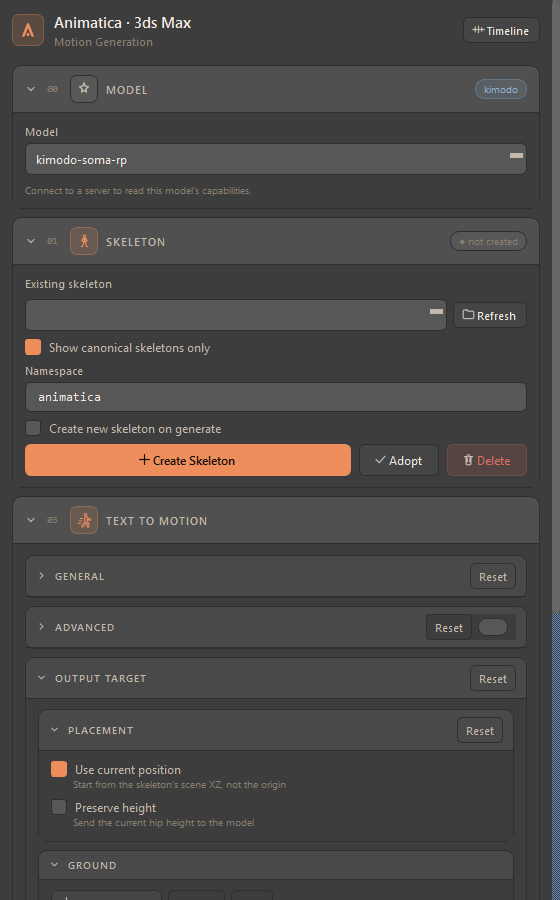
Everything is one scrolling column of collapsible, numbered cards. The numbers are the workflow order, not a hierarchy:
| Card | Purpose | Visible by default |
|---|---|---|
| 00 · Model | Which model generates, and the knobs only that model has | Yes |
| 01 · Skeleton | Create, adopt, pick or delete the rig | Yes |
| 02 · Motion Import | Load motion from a file on disk | No — Settings ▸ Interface reveals it |
| 03 · Text to Motion | Generation parameters, output placement, constraints, and the Generate button | Yes |
| 04 · Single Pose | One pose at the current frame | Yes |
| 05 · Console | The log every other window writes to | Opens as its own window |
Settings is not a card here — it opens as a separate window from the Animatica menu, and shares this window's state.
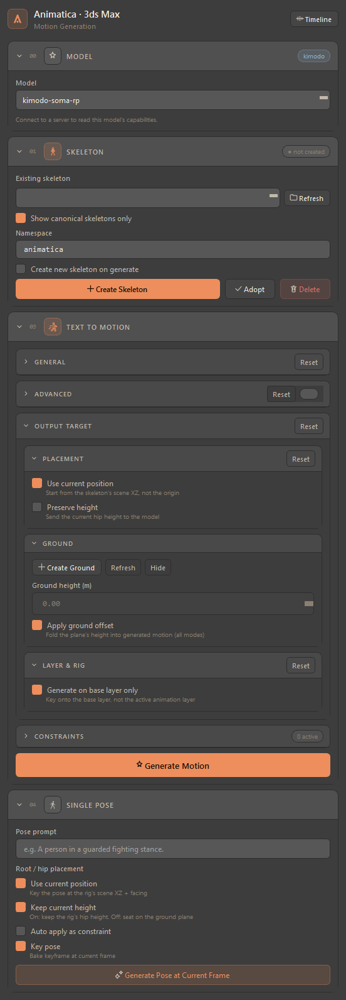
Your first motion
- Open Settings and point the plugin at a server: keep Local and set the Server URL, or switch to Cloud and log in. Press Test.
- In 01 · Skeleton, press Create Skeleton. A 77-joint rig is built under the Namespace shown in the card.
- Open the Timeline (the button in the window header) and add a prompt block: press Add Prompt, or double-click empty timeline space and type.
- Optionally add constraints — a Path for where the character walks, effector pins for where a hand or foot must be.
- Press Generate Motion (or Generate in the timeline header, or Ctrl+G over the timeline). The progress bar and the elapsed clock run while the server works; the result is keyed onto your rig.
00Model
The model comes first because it decides the rest: the canonical skeleton, the frame rate, how long a single clip may be, and whether the motion steers from a trajectory.
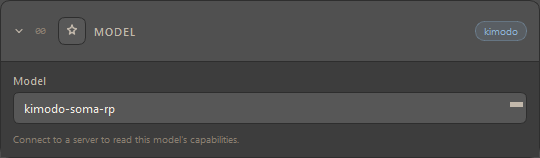
- Model — populated from the server's capabilities. Until a probe answers, the dropdown holds the model you used last.
- Facts line — what the server says about the chosen model: its frame rate, the joint count of its canonical skeleton, the longest request it accepts, and whether it steers from a trajectory. These are facts, not settings; they explain why the same prompt behaves differently between models.
- Default walk speed (m/s) — appears only for trajectory-driven models, and is used when no Path is drawn.
01Skeleton
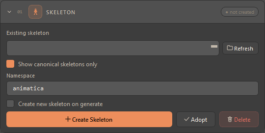
| Control | What it does |
|---|---|
| Existing skeleton + Refresh | Lists the skeleton roots in the scene so you can target a rig that is already there. Nothing is auto-picked for you: if the previous selection is gone, the picker shows blank rather than silently choosing a rig you never chose. |
| Show canonical skeletons only | On by default — the list shows only rigs the plugin built. If the filtered list comes out empty, the plugin falls back to showing all roots. |
| Namespace | The prefix on created joints (default animatica), which keeps several rigs apart. The same field appears in the timeline header; the two stay in lock-step. |
| Create new skeleton on generate | Build a fresh rig as part of the next generation instead of reusing the current one. |
| Create Skeleton | Builds the canonical soma77 rig — 77 joints, rooted at Hips — under the namespace. |
| Adopt | Makes the selected rig pipeline-ready: stores its current pose as the bind pose, plus hip height and namespace. |
| Delete | Removes the selected rig and the constraint markers the plugin attached to it, after a confirmation. It cannot be undone. |
| Header pill | not created until a rig is ready, then ready. |
Reusing a rig under the same namespace
If a rig already exists under the namespace you typed, Create Skeleton reuses it — but only after checking its shape. A rig built for one model is rooted at Hips just like every other, so a name match alone is not enough. If joints the selected model needs are missing, the plugin refuses, names how many are missing with a few examples, and tells you to change the namespace or delete the existing rig.
Adopting your own rig
Adopt is you asserting this pose is the rest pose, so it overwrites any stored bind pose unconditionally. It works two ways:
- from the picker, for a rig the plugin recognises; or
- from the viewport selection — select any node of the rig and the plugin climbs to the top node and adopts from there. This is the escape hatch for an imported rig whose joint names the detection does not recognise.
Adopt deliberately does not mark the rig canonical, so an adopted rig stays out of the “canonical skeletons only” list. That is by design: it keeps rigs you brought in distinct from rigs the plugin built.
:, or before a _. A root with neither falls back to the namespace in the card.
02Motion Import
Hidden by default, because the plugin is generation-first. Reveal it with Show Motion Import panel in Settings ▸ Interface; the choice is remembered and the card appears and disappears live.
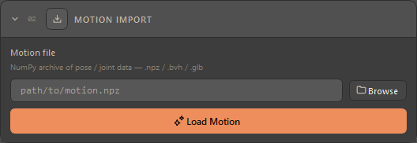
.npz, .bvh and .glb; the header pill shows the loaded extension.03Text to Motion
The generation request itself. The prompts live on the Prompt Timeline; this card holds the parameters and the button.
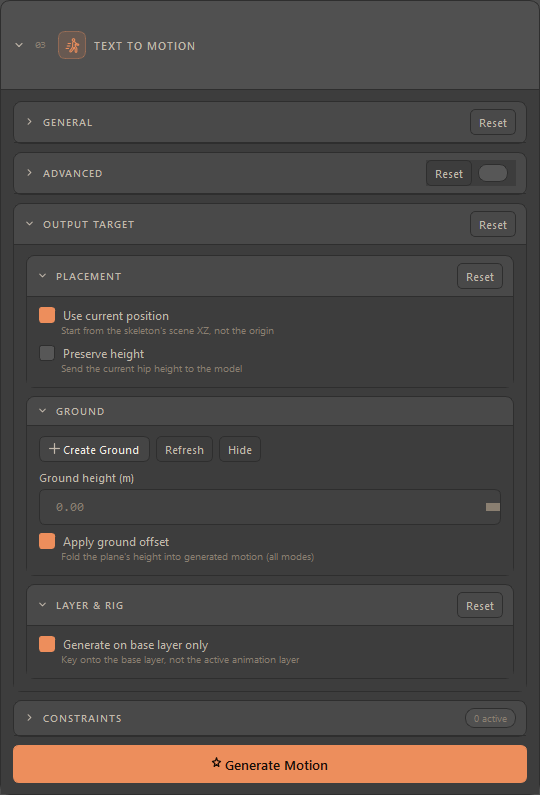
General
| Control | Meaning |
|---|---|
| Duration | Read-only: how long the current timeline content runs. |
| Max single prompt | Fixed reminder that one prompt block covers at most 10 s. |
| Diffusion steps | Quality against time: Draft (100), Standard (300), Fine (500), or Custom…. |
| Custom diffusion steps | Revealed by the Custom… preset; accepts 1–1000. Above 500 a warning appears — the server caps steps at 500 and may reject higher values. |
| Seed / Random | Fix a seed to repeat a result, or tick Random to vary it. The field greys out while Random is on. |
| Reset | Each group has its own Reset, scoped to the fields that group owns. |
Advanced
Off until you flip the toggle in the group header. The Reset here restores the parameters but deliberately leaves the toggle alone, so a reset does not collapse the panel you are editing.
| Control | Range | Meaning |
|---|---|---|
| Num samples | 1–8 | How many candidate motions the server samples for the request. |
| CFG type | Separated / Regular / Nocfg | How the guidance is applied. |
| CFG weight (text) | 0–10 | How strongly the text steers the result. |
| CFG weight (constraint) | 0–10 | How strongly your constraints steer it. |
| Transition frames | 0–30 | Blend length between consecutive prompt blocks. |
| Initial heading (deg) | 0–360 | Which way the character starts facing. |
| Server post-processing | on/off | Runs the server's own pass (root-drift correction) over the sampled motion. On by default. |
| Root margin (m) | 0–0.2 | Horizontal slack for that correction. Greys out with the box above it. |
Output Target
In 3ds Max there is exactly one target: the scene holds one animation, and a generation replaces it. Because there is nothing to pick between, the mode picker is not shown — the timeline header simply reads Mode: Replace.
Placement
- Use current position — start from the skeleton's scene XZ and facing, not from the origin.
- Preserve height — send the rig's current hip height to the model, so the motion is generated at that height rather than shifted afterwards.
Ground
A movable ground-plane object whose height is folded into generated motion.
- Create Ground spawns the plane (or finds the existing one).
- Refresh pulls the plane's live height into the Ground height (m) field; editing that field moves the plane. The plane is the source of truth — the field is a mirror, and it is disabled until a plane exists.
- Hide / Show toggles the plane's visibility, and the button label follows the plane's actual state.
- Apply ground offset is the master switch for the fold itself. It is policy rather than a plane control, so it stays available even with no plane in the scene.
Layer & Rig
- Generate on base layer only — key onto the base layer regardless of which animation layer is active. This is key placement only; additive layers above still show.
3ds Max exposes native animation layers, which is why this switch is here and why it is the only one in the group.
Generate Motion
Builds one request from every prompt block on the timeline and sends it. While it runs, a progress row below the card shows the phase, an indeterminate bar and an elapsed clock; the card itself is disabled so a second click cannot race the first. Ctrl+G over the timeline does the same thing, as does Generate in the timeline header.
Constraints
Constraints steer the generation request, which is why the card sits inside Text to Motion (collapsed) rather than next to the timeline. Its header pill counts how many are active.
The six types
| Type | What it pins |
|---|---|
| Full Body | The pose shape at that frame — joint rotations only. The root is deliberately left free, so the character still travels and reaches the pose during the animation. |
| Left Leg | The left-foot effector position at that frame. |
| Right Leg | The right-foot effector position at that frame. |
| Left Arm | The left-hand effector position at that frame. |
| Right Arm | The right-hand effector position at that frame. |
| Path | A ground waypoint — where the character should be, in XZ, at that frame. Several waypoints make a route. |
The same colours are used by the type picker, the timeline pins and the viewport markers, so a pin you see on the ruler is recognisably the same thing as the marker in the scene.
Adding constraints
- Add Constraint in the card captures the currently selected type at the playhead, from the rig.
- The six quick-add buttons in the timeline header do the same for their own type, without disturbing the card's selection.
- Clicking a constraint icon on the timeline adds that type at the block's midpoint; right-clicking the timeline offers the same actions in a context menu.
- Capture needs a rig: with no skeleton picked, the plugin logs a warning and does nothing.
Path waypoints
The first waypoint is sampled from where the character actually stands, so the path is anchored to the rig. Every waypoint after that is placed from its neighbours instead of being sampled — on a rig with no motion yet, sampling would drop every pin in the same spot and you would have to dig each one out of the pile. Drag the marker in the viewport to put the waypoint where you want it; the movement line redraws as you drag.
Two related display switches live in the card: Show path length and Show marker name. Both are viewport-only and never reach the server.
Effector pins
Left/Right Leg and Left/Right Arm each sample their effector joint's position at the frame. One constraint per type per frame: capturing the same type at the same frame replaces the previous one rather than stacking a second.
The rest of the card
- Convert Animkeys turns the rig's existing animation keys into constraints — also available from the timeline header.
- Keep constraint keyframes keys a captured Full Body pose onto the rig as well, so scrubbing previews the pinned pose. Clear All Keyframes removes them again.
- ◀ Prev / Next ▶ jump the playhead to the adjacent authored constraint frame, wrapping at both ends. [ and ] do the same over the timeline.
04Single Pose
One pose at the current frame, from one short prompt.
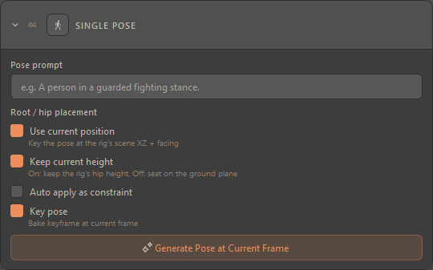
| Control | Meaning |
|---|---|
| Pose prompt | A short description of the pose. The same field appears inline in the timeline header, and the two mirror each other. |
| Use current position | Key the pose at the rig's scene XZ and facing. |
| Keep current height | On: keep the rig's hip height. Off: seat the pose on the ground plane. |
| Auto apply as constraint | Also record the generated pose as a Full Body constraint at that frame, so a later generation reproduces it. |
| Key pose | Bake a keyframe at the current frame. |
| Generate Pose at Current Frame | Sends the request. The Pose button in the timeline header runs the same pipeline from the playhead. |
Prompt Timeline
The timeline has no home inside the panel: it lives in a floating window that opens by itself the first time the tool window is shown, and is re-opened from the Timeline button in the header. Closing it hides it — your prompts are not lost.
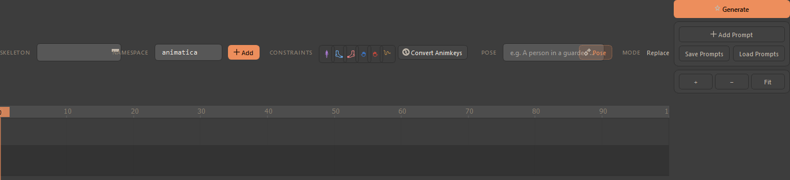
Blocks
- Add Prompt creates a block; double-clicking empty space creates one and opens its editor straight away.
- Double-click a block to edit its text inline. Enter commits, Esc cancels.
- Drag a block to move it, drag its edge to resize. Hold Shift to disable snapping, Alt to push the neighbour out of the way (or to jump past it), Ctrl while resizing an edge to scale the block's interior pins with it.
- Right-click for the context menu: constraint actions, prompt actions (edit, regenerate, export, snap) and view fits.
- Faint dots in the marker band mark frames where the root joint carries keys.
Header controls
The skeleton selector and namespace field are the same controls as in card 01 and stay in lock-step with them. Add creates a skeleton under the namespace shown. Fit re-syncs the view to the scene range and resets the zoom.
Saving prompts
Prompts travel inside the .max file: they are stored on the scene root in a binary-safe slot that survives save and load, and they are invisible in Max's own file-properties UI. Save Prompts and Load Prompts additionally write them to, and read them from, a file of their own — useful for moving a set of prompts between scenes.
05Console
The log every other window writes to, in its own window (Animatica ▸ Console…).
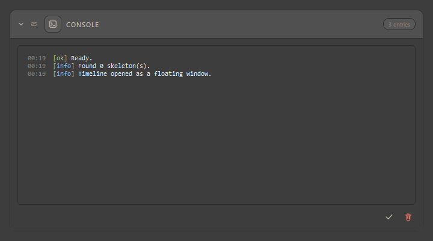
[ok] Ready., [info] Found 0 skeleton(s). and [info] Timeline opened as a floating window. — with the entry count in the header pill, and clear controls bottom-right.Two behaviours worth knowing:
- Nothing is lost by opening it late. The main window logs whether or not the Console has ever been opened; when it opens, the buffer is replayed.
- Closing hides it. The log lives in the shared state either way, so re-opening never rebuilds the view.
The Console is also where the plugin announces itself at startup, printing which source folder this Max session loaded and when that source was last edited. Max keeps an imported module for the life of the process, so that line is how you tell whether the code you just edited is actually the code that is running.
Video to Motion
A clip goes in, motion lands on the rig. Open it from Animatica ▸ Video to Motion…; the window is titled Animatica Video to Motion.
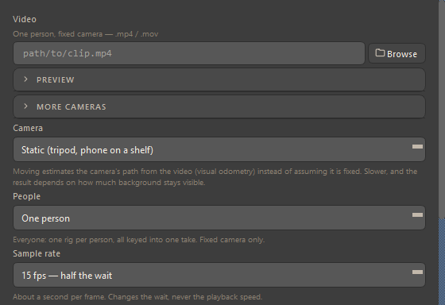
| Control | Meaning |
|---|---|
| Video | The clip — .mp4 or .mov. One person, fixed camera gives the best result. |
| Preview | A collapsed frame preview of the selected clip. |
| More cameras | Add further angles of the same take. Start every phone, clap once above your head, and the clap is the sync point. |
| Camera | Static (tripod, phone on a shelf) or moving. Moving estimates the camera's path from the video instead of assuming it is fixed — slower, and it depends on how much background stays visible. |
| People | One person, or everyone — one rig per person, all keyed into one animation. Fixed camera only. |
| Sample rate | How densely the clip is sampled (e.g. 15 fps — half the wait). Roughly a second of processing per sampled frame; it changes the wait, never the playback speed. |
| Props | Objects to track as animated nulls, named in plain words (“sports ball, chair”). |
| Capture Motion / Reapply last / Cancel | Run the capture, re-apply the previous result, or stop a running job. |
Settings
Opened from Animatica ▸ Settings…. It is a window rather than a card, and it shares the tool window's state, so a change here takes effect immediately.
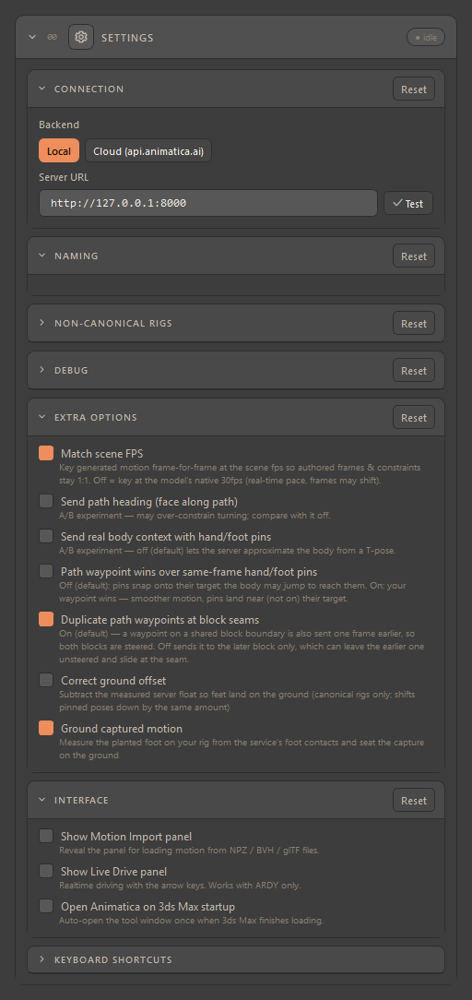
Connection
- Backend — Local or Cloud (api.animatica.ai).
- Server URL (Local) — where your MMCP server listens; the default is
http://localhost:8000. Test re-checks it. - Email / Password / Log In / Log Out / Test Connection (Cloud) — your Animatica account.
The backend and the server URL are shared across every Animatica host on the machine: it is one account against one server, so signing in or changing the URL in one application covers the others. Everything else in this window is per-host.
The header pill reports the last verdict. Availability is re-probed on first show, on Test, when you switch backend, and — debounced — while you type a URL. Typing only updates the pill; a backend switch may also offer recovery actions.
Naming
Empty in 3ds Max. The controls this group holds elsewhere describe named animation containers, which Max does not have.
Non-canonical rigs
- Skip top joint when sending hierarchy — on by default. Most rigs carry a synthetic reference node above the hips that the server does not expect; this uses the next joint, usually Hips, as the character root.
- Retarget route — how a rig that differs from the model's skeleton is reconciled. Leave it on Auto: in 3ds Max retargeting happens on the server, so Auto asks the server for its retarget state and lets it decide; Server forces the rig onto the wire; None asks for no retarget anywhere. A route carried over from another host that names a local retarget is not honoured silently — it resolves back to Auto and says so in the Console.
- Compensate group scale + Group scale — for a rig sitting under a scaled parent. Offsets are divided by the value on send and multiplied back on apply. Uniform scale only.
Debug
A Debug folder and a switch that writes one folder per generation run underneath it. The rest of the group holds clearly-labelled experiment levers (each says in its own sublabel that it is an experiment, and what the server does with it) — leave them alone unless you are chasing a specific problem with support.
Extra options
| Option | Meaning |
|---|---|
| Match scene FPS | On: generated motion is keyed frame-for-frame at the scene frame rate, so authored frames and constraints stay 1:1. Off: keys land at the model's native 30 fps — real-time pace, but frames may shift. A no-op in a 30 fps scene. |
| Send path heading (face along path) | An A/B experiment; it may over-constrain turning. Compare with it off. |
| Send real body context with hand/foot pins | An A/B experiment. Off (the default) lets the server approximate the body from a T-pose. |
| Path waypoint wins over same-frame hand/foot pins | Off (default): pins snap onto their target, and the body may jump to reach them. On: your waypoint is steered — smoother motion, pins land near but not on their target. |
| Duplicate path waypoints at block seams | On by default: a waypoint on a shared block boundary is also sent one frame earlier, so both blocks are steered. Off sends it to the later block only, which can leave the earlier one unsteered and sliding at the seam. |
| Correct ground offset | Subtracts the measured server float so feet land on the ground. Canonical rigs only; it shifts pinned poses down by the same amount. |
| Ground captured motion | Measures the planted foot on your rig from the service's foot contacts and seats a capture on the ground. |
Interface
- Show Motion Import panel — reveals card 02. This one takes effect immediately.
- Show Live Drive panel — has no effect in 3ds Max. The panel is shown only where the host declares a live-drive capability, and this one does not, so the preference alone cannot reveal it. It is the capability, not the toggle, that decides.
- The third switch in this group is labelled for a different host, and nothing in the 3ds Max plugin reads it. The Animatica window is opened from the Animatica menu.
Keyboard Shortcuts
A collapsed, read-only reference to everything in Keyboard & mouse below.
Exporting
The plugin has no export path of its own. You export the way you export anything else in Max: File ▸ Export, and pick FBX.
What happens during the export
The plugin rides on Max's own export callbacks. On #preExport it zeroes the visual aim offset on every joint it created; on #postExport it restores each offset exactly and checks that no node transform moved in the meantime. That check is deliberately loud: a moved transform after an export is the one thing this machinery exists to make impossible, so it prints the offending node names rather than passing quietly.
Nothing is asked of you: exporting through File ▸ Export is enough, and your scene is left exactly as it was afterwards.
Where your files live
| Path | What is in it |
|---|---|
%APPDATA%\animatica\shared.json | The account-level settings: the server URL and whether you are on Cloud. Shared by every Animatica host on the machine. |
%APPDATA%\animatica\auth.json | Your sign-in, likewise shared — signing in once covers every host. |
%APPDATA%\animatica\max\settings.json | Everything else: namespace, modes, window state, generation options. Per-host on purpose, so two applications cannot overwrite each other's interface state. |
%LOCALAPPDATA%\animatica\max\ | Regenerable data only. Safe to delete without losing settings, and it does not roam. |
%LOCALAPPDATA%\Autodesk\3dsMax\<year> - 64bit\<LOCALE>\scripts\startup\animatica_to_max_startup.py | The launcher written by the installer. Removed by install.py --uninstall. |
Your .max scene | Prompts and the rig's stamps (bind pose, hip height, namespace) travel inside the scene file itself. |
Settings files are written atomically — a half-written settings file would be worse than a missing one — and the shared keys are split out of the per-host file automatically, so a server URL you set in one application is the one every application uses.
Keyboard & mouse
Shortcuts fire while the mouse hovers the timeline. Arrows, Home/End, [/], ,/., Z, Shift+D and undo/redo are suspended while a prompt is being edited inline.
Keyboard
| Key | Action |
|---|---|
| ← / → | Nudge selected block −1 / +1 frame (steps the playhead if nothing is selected) |
| Shift+← / → | Nudge selected block −10 / +10 frames |
| Ctrl+← / → | Step playhead −1 / +1 frame |
| Ctrl+Shift+← / → | Step playhead −10 / +10 frames |
| Home / End | Snap playhead to selected block start / end |
| Shift+Home / End | Snap selected block start / end to playhead |
| Ctrl+Space | Play / stop toggle |
| [ / ] | Jump to previous / next constraint frame |
| , / . | Jump playhead to previous / next block edge |
| F | Fit timeline to range |
| Shift+F | Fit to selected prompt block(s) |
| Z | Zoom to selected prompt block(s) |
| Shift+Z | Fit zoom to all prompt blocks |
| Ctrl+Z / Ctrl+Y | Undo / redo timeline edits |
| Ctrl+G | Generate motion from all prompts |
| Delete | Remove selected prompt block(s) and constraint pin(s) — one undo step |
| Shift+D | Clear selection (blocks + constraint pins) |
| Esc | Cancel inline prompt edit |
| Enter | Commit inline prompt edit |
Mouse & block editing
| Gesture | Action |
|---|---|
| Left-drag (empty) | Scrub playhead (at any height) |
| Left-click near playhead | Scrub — the playhead wins over constraint pins near its line |
| Left-click (empty) | Clear selection (blocks + constraint pins) |
| Ctrl+Left-drag (empty) | Rubber-band select blocks + constraint pins |
| Left-click block | Select block |
| Ctrl+Left-click block | Add / remove block from selection |
| Left-drag block | Move block(s); hold Shift to disable snapping |
| Alt+Left-drag block | Jump past a neighbour — snaps into the nearest free gap on the drop side |
| Left-drag block edge | Resize; Alt pushes the neighbour, Ctrl scales pins |
| Left-click constraint icon | Add constraint at block midpoint |
| Left-click constraint pin | Select the pin and its viewport marker; Ctrl toggles it in / out of the selection |
| Left-drag constraint pin | Move the constraint (grab the pin shape itself) |
| Double-click block | Edit prompt text inline |
| Double-click empty | Create a new block and edit it |
| Middle-drag | Pan the view |
| Ctrl+Scroll | Zoom timeline in / out at the cursor |
| Right-click | Context menu — constraints, prompt actions (edit / regenerate / export / snap) and view fits |
Troubleshooting
The Animatica menu is not there after restarting Max
- Run
python scripts/install.py --listand check that the startup folder it prints matches the Max version and locale you are running. Max reads only its own language's profile tree. - If no profile was detected at all, start Max once so it creates one, then install again.
- Check the Max listener for the plugin's startup line. It names the folder this session loaded from and when that source was last edited — the fastest way to tell whether Max is running the copy you think it is.
“Local server unavailable”
The plugin could not reach your local MMCP server. The dialog offers three actions: Switch to Cloud, How to start the server (guidance only — Animatica never launches a server process for you), and Dismiss.
The generation was refused because of my rig
The server decides whether a retarget is needed. If the server carries no retarget model and your rig does not match the model's canonical skeleton, the plugin refuses rather than generating something wrong, in these words:
this server does not support retargeting — use a rig that matches the model's canonical skeleton (Skeleton → Create), or a server with a retarget model
Two ways forward: press Create Skeleton and generate onto the canonical rig, or point the plugin at a server that has a retarget model.
Create Skeleton says joints are missing
A rig already exists under that namespace, and it does not carry every joint the selected model needs. Either change the Namespace so a separate rig is built, or delete the existing rig.
Constraint buttons do nothing
Capture needs a rig. With no skeleton created or picked, the Console shows a warning — create or pick one first.
The exported FBX reads wrong in another application
Export through File ▸ Export. The export hygiene described above rides on Max's export callbacks, so a rig exported any other way does not get it. If the Console or listener printed a line about transforms having moved or offsets not being restored after an export, that is the check reporting a real problem — note the joint names it printed.
A button in the window does nothing at all
Open the Console: most failures are logged there as a line rather than raised at you. The startup path also reports its own failures by name (“Failed to open the Animatica tool”, “Failed to register the Animatica menu”) followed by the traceback in the listener.
Glossary & units
| Term | Meaning |
|---|---|
| MMCP | The Motion MCP protocol the plugin speaks to the server. The plugin is a client; the server generates. |
| Canonical skeleton | A rig in the layout the model expects. Create Skeleton builds one — soma77, 77 joints, rooted at Hips. Rigs of your own go on the wire as they are and are retargeted server-side. |
| Adopt | Make a rig you already have pipeline-ready — store its current pose as the bind pose, plus hip height and namespace — without marking it canonical. |
| Namespace | The prefix on created joints (default animatica), which keeps several rigs in one scene apart. |
| Constraint / pin | One authored requirement at one frame: a pose shape, an effector position, or a path waypoint. Pins appear on the timeline; markers appear in the viewport. |
| Path (root2d) | A sequence of ground waypoints saying where the character should be, and when. |
| Diffusion steps | How much effort the model spends. More steps is better and slower; the server caps them at 500. |
| Replace | 3ds Max holds one animation, so a generation replaces it. This is the only output mode here, which is why no mode picker is shown. |
Units & axes
The protocol boundary is fixed at meters, right-handed Y-up. 3ds Max is Z-up, and its scene unit can be anything — both are converted for you in a single module, so nothing you do in the scene has to be expressed in the protocol's terms. Motion is generated at the model's native 30 fps; turn on Match scene FPS in Settings to have it keyed at your scene's rate instead.
Animatica for 3ds Max — User Manual.
Requires 3ds Max 2027 on Windows x64. Product and account questions: animatica.ai.